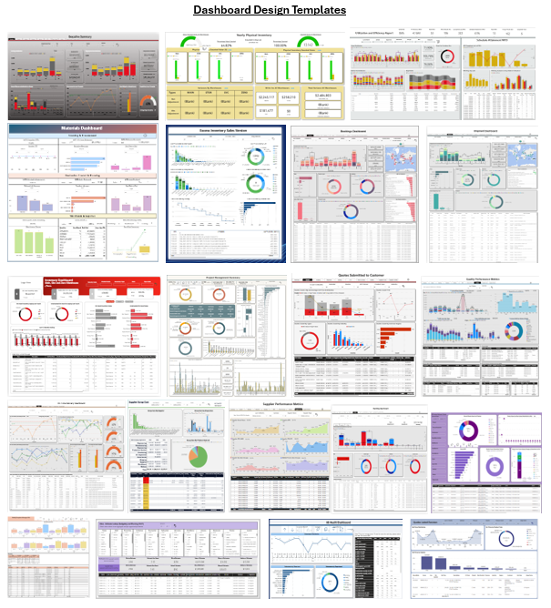

📂 My Projects/Practices
Forbes World's Billionaires with R
View on Kaggle
Datathon2022 (Python)
View on Kaggle
Case Study 2: Bellabeat with R
View on Kaggle
Building Rainfall Prediction Classifier (Python)
View on Kaggle
Database Creation
View on Github
Extract Transform Load Process
View on Github
ETL operations On Largest Banks Data
View on Github
Webscraping
View on Github
Statistic in Python
View on Github
Statistic in Python

Back